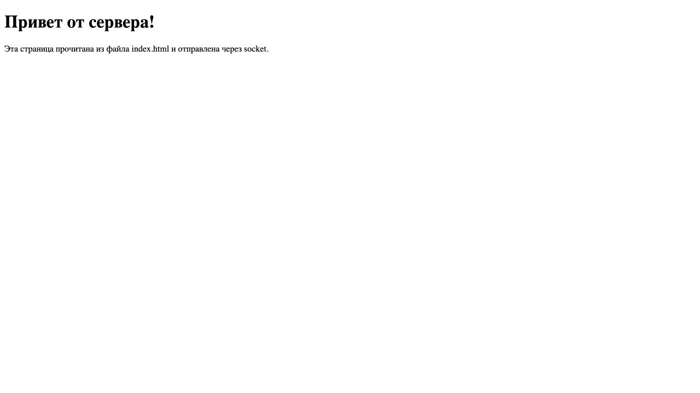
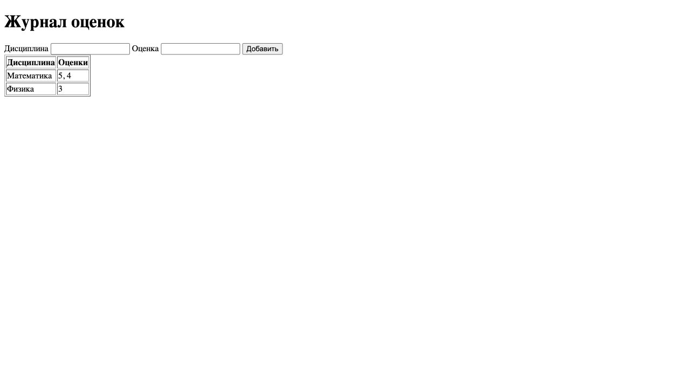

ЛР1. Сокеты
Цель работы - реализовать обмен данными между клиентом и сервером через UDP и TCP, а также обработать HTTP-запросы. Используется Python и стандартная библиотека socket.
Модель данных
В задании 1 передаются текстовые сообщения. В задании 2 основание и высота преобразуются в числа типа float. В задании 3 сервер читает HTML из файла index.html.
В чате словарь users хранит подключённые сокеты и имена пользователей. К имени добавляется порт клиента. При отключении запись удаляется. Блокировка users_lock защищает общий словарь при работе потоков.
В журнале словарь journal хранит название дисциплины как ключ и список целочисленных оценок как значение. Оценки находятся в памяти до остановки сервера.
Задание 1
В task1 находятся UDP-сервер и клиент. Клиент отправляет Hello, server, сервер выводит сообщение и отвечает Hello, client. Ответ выводится у клиента. Для обмена используются sendto() и recvfrom().
Адрес сервера: 127.0.0.1:8001.
Ключевой блок сервера:
message, peer_address = server_socket.recvfrom(4096)
print(message.decode('utf-8'), flush=True)
server_socket.sendto(b'Hello, client', peer_address)
Задание 2
Реализован вариант 4 — площадь параллелограмма. Формула: S = a * h.
Клиент из task2 запрашивает основание и высоту, отправляет их серверу через TCP. Сервер вычисляет площадь и возвращает результат. Сообщения заканчиваются переводом строки.
При основании 5 и высоте 3 получен ответ Площадь параллелограмма: 15.
Порт: 8002.
Вычисление и отправка результата на сервере:
base, height = map(float, stream.readline().split())
area = base * height
peer.sendall(f'Площадь параллелограмма: {area:g}\n'.encode('utf-8'))
Задание 3
Сервер task3/server.py читает index.html и отправляет HTTP-ответ с кодом 200. Заголовок Content-Length содержит длину HTML в байтах. После заголовков идёт пустая строка, затем содержимое файла.
При запущенном сервере страница доступна по адресу http://127.0.0.1:8003.
Формирование HTTP-ответа:
content = PAGE.read_bytes()
header_data = (
'HTTP/1.1 200 OK\r\n'
'Content-Type: text/html; charset=utf-8\r\n'
f'Content-Length: {len(content)}\r\n'
'Connection: close\r\n\r\n'
)
peer.sendall(header_data.encode('ascii') + content)
Результат открытия страницы в браузере:

Задание 4
В task4 реализован многопользовательский TCP-чат на порту 8004. Один и тот же клиент запускается в нескольких терминалах. Имя вводится с клавиатуры, к нему добавляется порт подключения для различения одинаковых имён.
На сервере каждому клиенту выделяется поток threading.Thread. Подключения хранятся в словаре, доступ к нему защищён блокировкой. Сообщение отправляется всем, кроме автора.
Клиент получает сообщения в отдельном потоке. Для выхода используется /exit, после отключения сервер удаляет участника.
Поток для каждого подключения:
peer, peer_address = server_socket.accept()
threading.Thread(target=handle_client, args=(peer, peer_address), daemon=True).start()
Обработка сообщения и команды выхода:
for line in stream:
message = line.rstrip('\r\n')
if message == '/exit':
break
if message:
send_to_all(f'{name}: {message}', peer)
Задание 5
Сервер task5/server.py вручную разбирает HTTP-запросы. GET / возвращает форму и таблицу оценок, POST / добавляет оценку и возвращает обновлённую страницу. Тело POST читается по Content-Length.
При запущенном сервере журнал доступен по адресу http://127.0.0.1:8005.
Пример состояния словаря journal после ввода оценок, показанных на скриншоте:
{
"Математика": [5, 4],
"Физика": [3]
}
Для каждого предмета в таблице одна строка. После перезапуска сервера журнал очищается.
Разбор тела POST и добавление оценки:
if method == 'POST':
body = incoming.read(int(headers['content-length']))
form = parse_qs(body.decode('utf-8'))
subject = form['subject'][0]
grade = int(form['grade'][0])
journal.setdefault(subject, []).append(grade)
Журнал после добавления двух оценок по математике и одной по физике:

HTTP-эндпоинты
| Задание | Адрес | Метод | Данные запроса | Ответ |
|---|---|---|---|---|
| 3 | http://127.0.0.1:8003/ |
GET | Без тела | 200 OK, содержимое index.html |
| 5 | http://127.0.0.1:8005/ |
GET | Без тела | 200 OK, форма и таблица оценок |
| 5 | http://127.0.0.1:8005/ |
POST | Поля subject и grade |
200 OK, обновлённая таблица |
POST использует формат application/x-www-form-urlencoded. Поле subject содержит название дисциплины, grade — целочисленную оценку. Длина тела задаётся заголовком Content-Length. Сервер не различает пути, в таблице приведён используемый адрес /.
В заданиях 1, 2 и 4 HTTP не используется: обмен идёт непосредственно по UDP или TCP на портах 8001, 8002 и 8004.
Проверка
Проверены обмен UDP, вычисления с целыми и дробными числами, получение HTML и соответствие длины ответа. В чате проверены три подключения, рассылка сообщений и выход.
Для журнала проверены добавление двух оценок одному предмету и группировка по дисциплинам.
Вывод
Реализованы пять заданий: обмен UDP, вычисления TCP, выдача HTML, многопользовательский чат и журнал оценок с GET/POST.